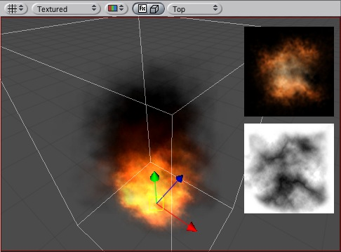

Particle systems in Unity are used to make clouds of smoke, steam, fire and other atmospheric effects. Particle systems work by using one or two textures & drawing them many times, creating a chaotic effect.
|  |
One of the default explosions included in unity and the two textures it is made of. The orange texture is used for the flames in the bottom of the explosion, and the grayscale one is used to make the smoke near the top.
A typical particle system in Unity is an object that contains a Particle Emitter, a Particle Animator and a Particle Renderer component. The emitter generates the particles, the animator moves them over time, and the renderer gets them on the screen.
If you want your particles to interact with the world, add a ParticleCollider component to the object.